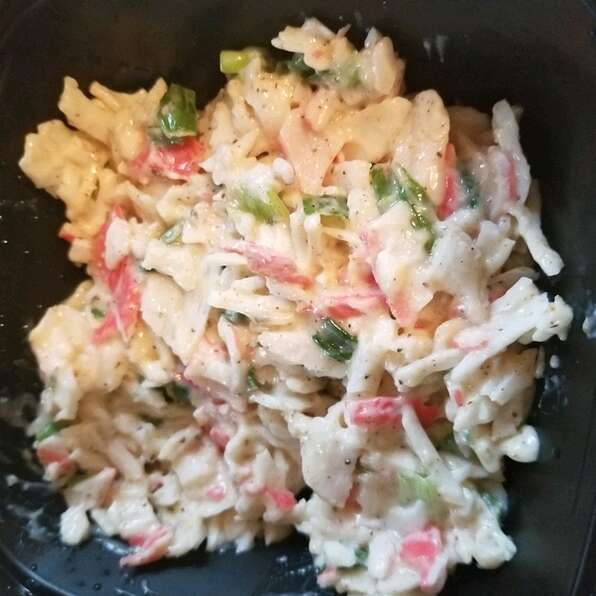

Crab Salad

Description
Serve this crab and celery salad on crackers, lettuce or stuff it in puff
pastry shells.
- 2 pounds crabmeat
- 2 ½ cups chopped celery
- 8 tablespoons mayonnaise
- 2 teaspoons celery seed
- 1 pinch paprika
- 2 ½ tablespoons white sugar
- ½ tablespoon ground black pepper
- 1 teaspoon Old Bay Seasoning TM
- 2 teaspoons dried parsley
Steps
-
In a large bowl, combine the crabmeat, celery, mayonnaise, celery seed,
paprika, sugar, pepper, seafood seasoning and parsley. Mix well and
refrigerate until chilled.